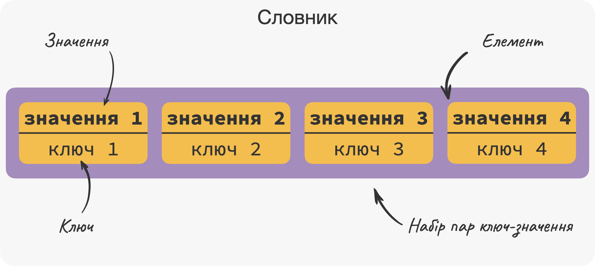
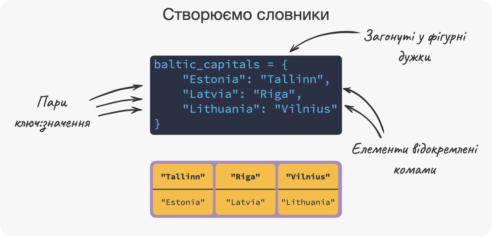
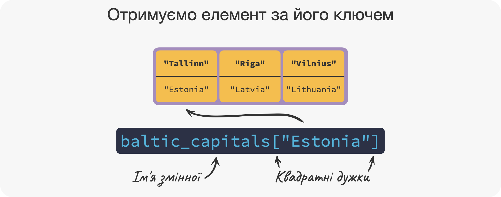
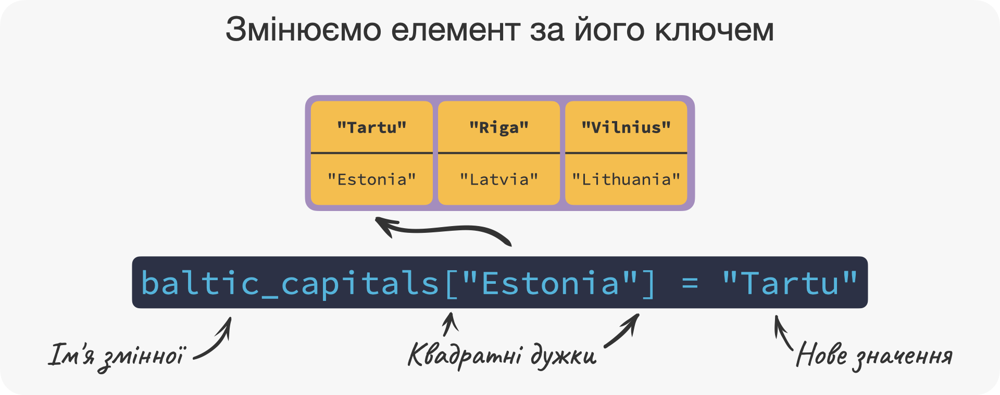
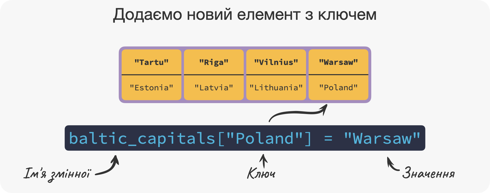
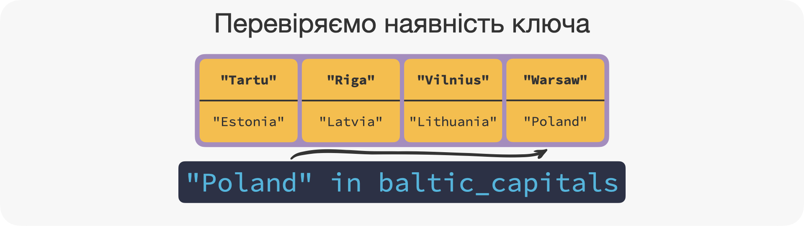
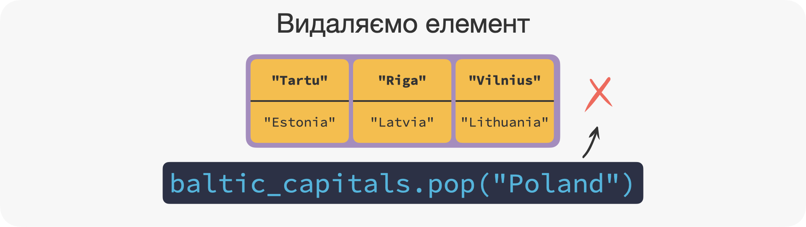
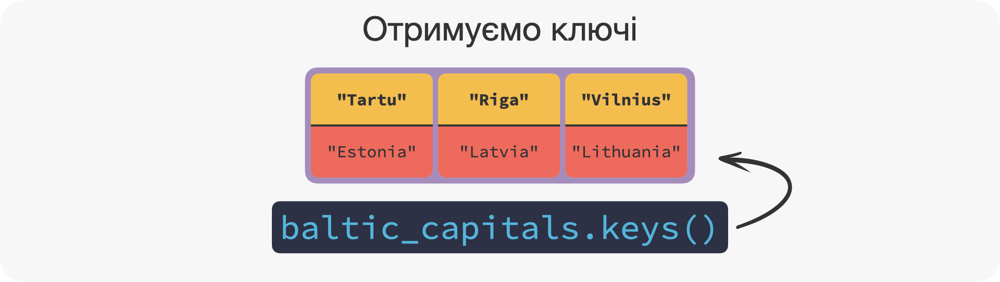
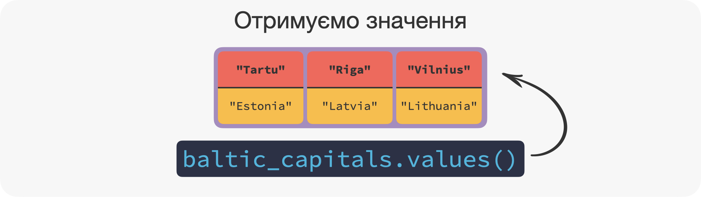

Глава 9 Словники dict
⏱️ Час на опанування теми: 25 хвилин
🤷 Для чого ми це вивчаємо:
- опанувати структуру даних створену для зберігання пар значень
- доповнити знання новою структурою даних
🔑 Результати навчання:
- створювати словники
dict - отримувати елементи за їх ключами
- змінювати елементи за їх ключами
- додавати нові елементи
- видаляти елементи
- перевіряти чи містяться елементи з певними ключами у словнику
Не завжди такі послідовності як list та tuple є найзручнішими, щоб зберігати дані. Для деяких даних порядок елементів не важливий і отримувати доступ до елементів зручніше через так званий ключ 🇬🇧 key 🔑, а не за індексом. Словники dict – це як раз такий набір пар ключ-значення 🇬🇧 key-value . Ключ, як і значення можуть бути будь-якими об’єктами у Python. Але ключі повинні бути об’єктами незмінних типів, таких як int, str, tuple тощо, при чому вони не повинні бути усі одного типу. З іншого боку, ключі повинні бути унікальними, тоді як значення можуть повторюватись 👯.
Чому структура даних словники називаються словниками? Дуже просто! Ідея фізичних словників 📕 – асоціювати кожне слово в мові з його перекладом на іншу мову. Тобто вони формують таку собі пару, точнісінько як і в структурі даних словники dict. Тому, коли нам треба знайти переклад певного слова, ми шукаємо його в словнику і бачимо його переклад. Так само і в словниках dict – ми можемо знайти переклад (читай значення) за словом на нашій рідній мові (читай ключ).
9.1 📕 Створюємо словники dict
Як ми знаємо (або не знаємо), до Балтійських країн належать Естонія 🇪🇪, Латвія 🇱🇻 та Литва 🇱🇹. Столицями цих країн є відповідно Талін, Ріга та Вільнюс. Якщо ми запишемо столиці до окремого списку list, то ми загубимо оцей зв’язок між країною та її столицею, тому ми використаємо словник dict.

Щоб створити dict, нам треба прописати через кому усі пари у вигляді ключ:значення і загорнути все це у фігурні дужки { та }.
Насправді це виглядає легше ніж звучить. Давайте створимо словник baltic_capitals із пар країна-столиця:
baltic_capitals = {
"Estonia": "Tallinn",
"Latvia": "Riga",
"Lithuania": "Vilnius"
}
baltic_capitals## {'Estonia': 'Tallinn', 'Latvia': 'Riga', 'Lithuania': 'Vilnius'}У цьому випадку "Estonia", "Latvia" та "Lithuania" будуть ключами 🔑, за якими ми зможемо отримати значення "Tallinn", "Riga" та "Vilnius".

До речі, нам не обов’язково розміщувати елементи на окремих рядках. Ми це зробили виключно для зручності, щоб легше було читати код.
А ось інший приклад словника nums. Ключами якого є об’єкти float, int та str, а значення – str та list. Цей словник не має жодного сенсу, крім того, що демонструє можливості dict:
nums = {
1.1: "one point one",
2.5: "two point 5",
"four": [4, "four", 4.0]
}
nums## {1.1: 'one point one', 2.5: 'two point 5', 'four': [4, 'four', 4.0]}Якщо ж ми спробуємо створити словник з дуплікованими 🇬🇧 duplicated ключами (тобто з повторюючимися чи двома однаковими ключами), то словник буде містити тільки останню зазначену пару. Давайте подивимось як це відбувається у прикладі внизу:
ua_en = {
"кіт": "cat",
"собака": "dog", # зверніть увагу на дуплікований ключ "собака"
"собака": "doggo" # зверніть увагу на дуплікований ключ "собака"
}
ua_en## {'кіт': 'cat', 'собака': 'doggo'}9.2 🔑 Працюємо з ключами
Саме цікаве починається після створення. Якщо дуже коротко, то ключі 🔑 в dict – це наші “нові індекси”. Тобто, якщо у list та tuple нам треба було зазначити індекс у квадратних дужках, то в випадку dict нам треба зазначити ключ 🔑, за яким закріплена цікаве для нас значення.
9.2.1 Отримуємо елемент за його ключем
Наприклад, ми хочемо дізнатися столицю Естонії 🇪🇪. Для отримання елемента, потрібно прописати ім’я словника, і потім ключ загорнутий у квадратні дужки [ та ]:
baltic_capitals["Estonia"]## 'Tallinn'
До речі, навпаки це не працює. Якщо ми хочемо отримати країну, столиця якої "Tallinn", то вираз baltic_capitals["Tallinn"] не спрацює (тому що у нас не існує ключа 🔑 "Tallinn"):
baltic_capitals["Tallinn"]Traceback (most recent call last):
File "<stdin>", line 1, in <module>
KeyError: 'Tallinn'Пам’ятаєте що ключі 🔑 повинні бути унікальними? Так ось це поясняється тим, що якщо у нас було б два ключі "Estonia", то Python не зміг розібратись яке саме значення повертати.
9.2.2 Змінюємо елемент за його ключем
Так само як і в list, ми можемо змінити елементи. Синтаксис такий самий як і у списках, але замість індексу, нам треба зазначити ключ 🔑:
baltic_capitals["Estonia"] = "Tartu"
Але давайте все ж таки залишимо "Tallinn", як столицю Естонії 🇪🇪:
baltic_capitals["Estonia"] = "Tallinn"9.2.3 Додаємо новий елемент з ключем
Щоб додати новий елемент до словника dict, ми можемо використати такий самий синтаксис, який ми використовували для змінення значень елементів: name_of_dict[new_key] = new_value.
Давайте додамо Польщу 🇵🇱 до Балтійських країн (не хвилюйтеся, ми скоро її видалимо). Ключем в цій парі буде "Poland", а значенням – "Warsaw".
baltic_capitals["Poland"] = "Warsaw"
9.3 ➕ Застосовуємо оператори
На відміну від lists, коли ми використовуємо оператор in, ми перевіряємо наявність ключа 🔑, а не значення елементу. Це означає що ми можемо перевірити чи є, скажімо "Poland" чи "Latvia" серед ключів, але не можемо перевірити чи є "Warsaw" серед значень.
Давайте перевіримо, чи є "Poland" серед ключів:
"Poland" in baltic_capitals## True
Так само як і у list, ми можемо використати оператор not in. А ось оператори + та * не реалізовані для словників dict.
9.4 🪛 Застосовуємо корисні методи
Словники мають одинадцять 1️⃣1️⃣ методів, але ми подивимось тільки на ті, що найчастіше використовуються. ### Видаляємо елемент
Все ж таки Польща 🇵🇱 не вважається Балтійською державою і нам треба видалити елемент з ключем "Poland" з нашого словнику. Для цього існує метод .pop(), для використання якого нам треба зазначити ключ в дужках:
baltic_capitals.pop("Poland")## 'Warsaw'baltic_capitals## {'Estonia': 'Tallinn', 'Latvia': 'Riga', 'Lithuania': 'Vilnius'}
Це не буде працювати зі значеннями (тобто "Warsaw" в попередньому випадку).
Інший корисний метод – це .keys(). Він повертає усі ключі 🔑, що містяться в словнику:
baltic_capitals.keys()## dict_keys(['Estonia', 'Latvia', 'Lithuania'])
І дзеркальний 🪞 метод існує також і для значень – .values():
baltic_capitals.values()## dict_values(['Tallinn', 'Riga', 'Vilnius'])
Якщо ви хочете використати ключі або значення як послідовності, не забудьте загорнути їх у функцію list(), наприклад list(baltic_capitals.keys()). Тому що обидва методи повертають дещо спеціальний об’єкт, який нам треба трансформувати у list.
Вітання! Тепер ти вмієш створювати словники dict, отримувати, додавати та видаляти їх елементи та перевіряти чи містить словник той, чи інший елемент за ключем. Ще одна глава, і ми повністю звершимо основні структури даних.
🤸 Вправи
dict:simpsons = {"name" : ["Homer", "marge", "Lisa", "Bart"],
"fam_role" : ["father", "mother", "sister", "brother"],
"age" : [39, 36, 8, 10]}simpsons["Homer"]?"marge" у словнику?"Meggie" до словника?dict_values([['Homer', 'Marge', 'Lisa', 'Bart', 'Meggie'],
['father', 'mother', 'sister', 'brother'],
[39, 36, 8, 10]])